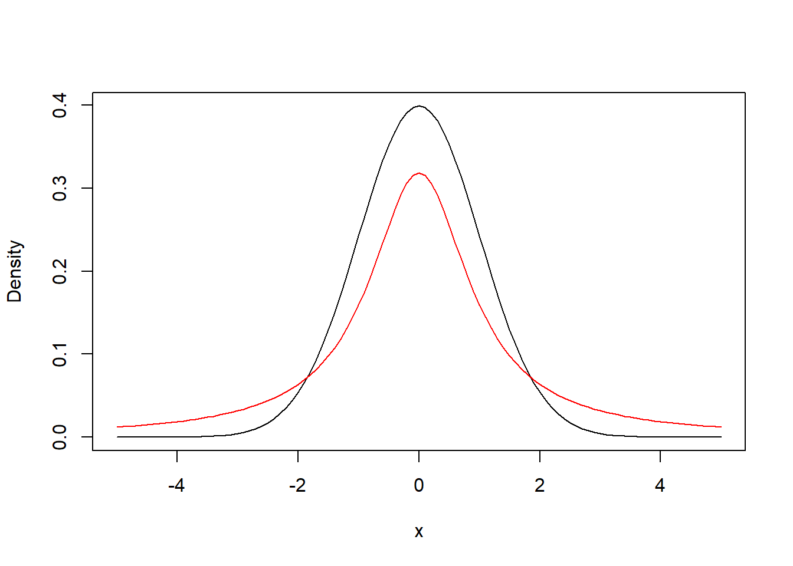
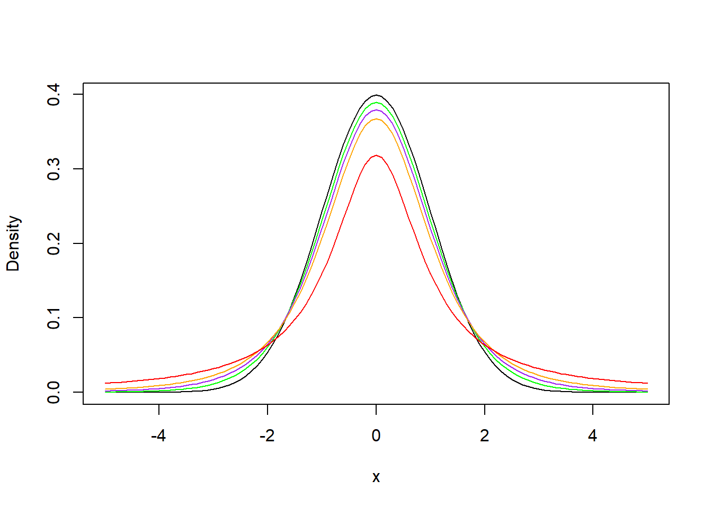
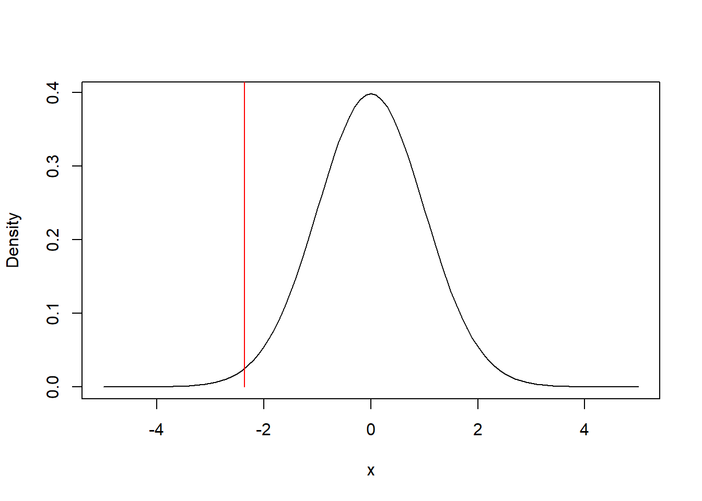
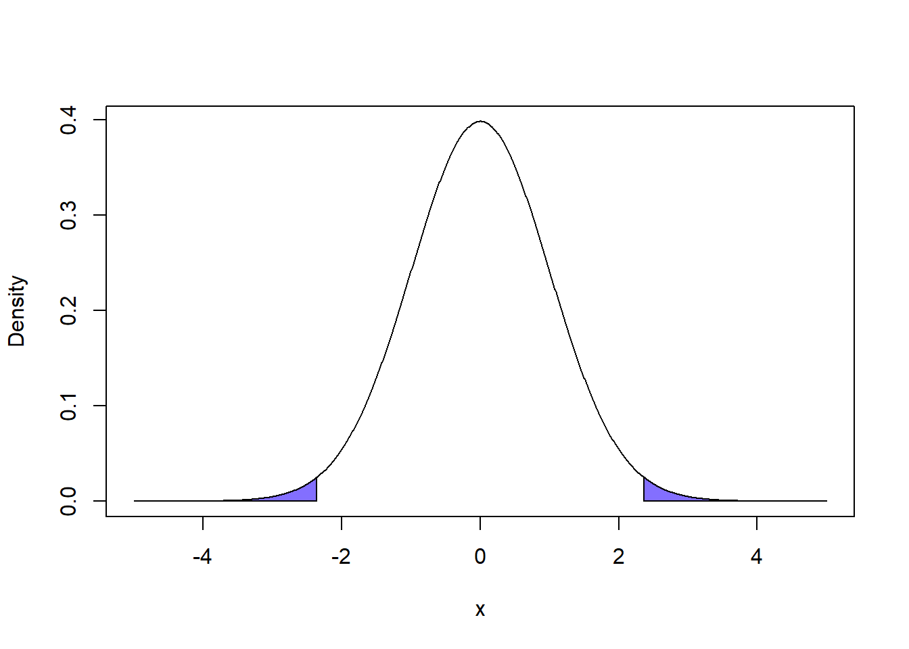
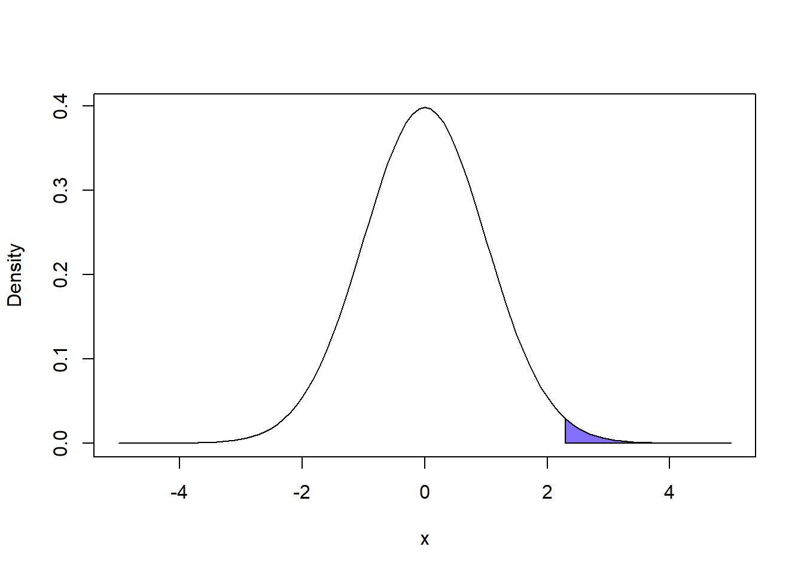
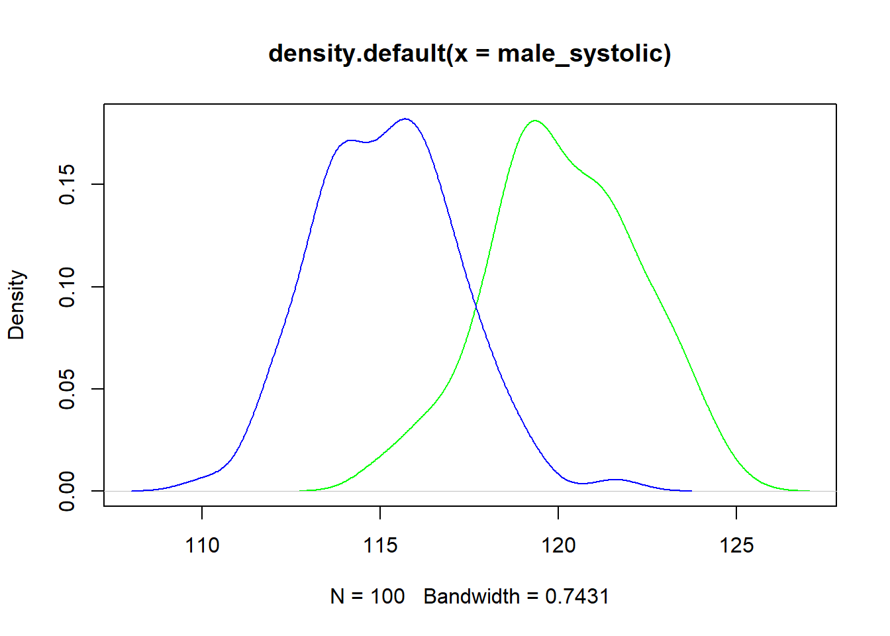
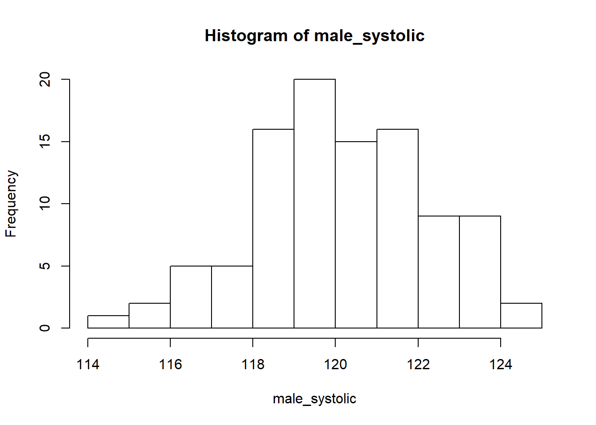
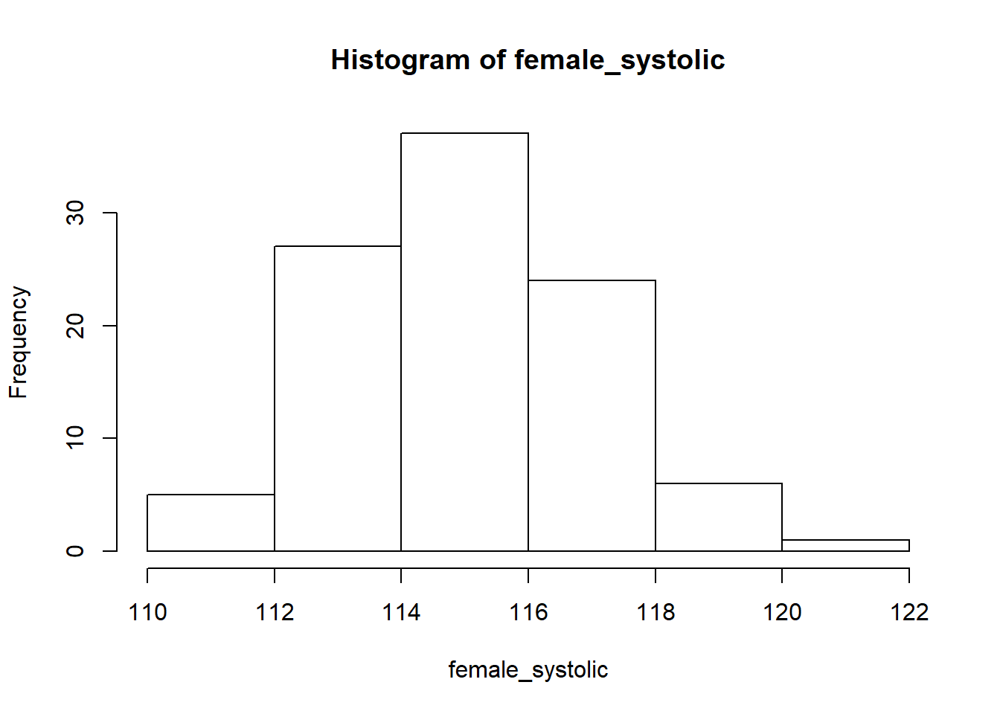

Chapter 8 Comparing Two Groups w/ Independent Samples T-test
A common objective we have in our reserach work is to compare groups of people. For example, we might wish to know: if PhD students are more anxious than undergrad students; if men are more likely to binge drink than women; or, if students in different school districts have different performance on standardized tests. The \(t\)-test is one such test we can use, when the data calls for it!
Let us say we have a random sample that we have split into two groups, \(G_1\) and \(G_2\). We have measured a numeric variable \(X\), which we assume is normally distributed. For example, \(G_1\) might represent men and \(G_2\) might represent women and \(X\) might be systolic blood pressure. We are curious if group membership \((G_1 vs G_2)\) is associated with different values of \(X\).
One way we can frame this as a scientific question is to ask if: “The mean value of \(X\) is different between groups \(G_1\) and \(G_2\).” Let’s define \(\mu_{G1}\) as the population-level mean of \(X\) for \(G_1\), and \(\mu_{G2}\) as that for \(G_2\). What we are essentially trying to ask is, does \(\mu_{G1} = \mu_{G2}\)?
8.1 Statistical Hypotheses of the Independent Samples T-Test
The null and alternate hypothesis of the t-test are typically presented as:
- \(H_0\): \(\mu_{G1} = \mu_{G2}\)
- \(H_A\): \(\mu_{G1} \neq \mu_{G2}\)
Importantly, \(\mu_{G1} = \mu_{G2}\) is the same as \(\mu_{G1} - \mu_{G2} = 0\). Therefore, we can also consider the null and alternate hypothesis as follows:
- \(H_0\): \(\mu_{G1} - \mu_{G1} = 0\)
- \(H_A\): \(\mu_{G1} - \mu_{G1} \neq 0\)
So, the independent sample t-test will attempt to assess the probability of our observed data assuming that \(H_0\) is true.
8.2 Logic of the t-test
Before we learn how to run a t-test, we need to think through what our null hypothesis means and what it might mean to reject it. When we run a statistical test, we assume that our null hypothesis is true. If we assume that the null is true and that \(\mu_{G1} - \mu_{G2} = 0\) at the population-level then it follows that if we were to sample a set of people from \(G_1\) and \(G_2\) and looked at the difference in their group means of \(X\), that 0 is the most likely value. While we use \(\mu_{G_1}\) and \(\mu_{G_2}\) to represent the population-level mean, we use \(\bar{x}_{G1}\) and \(\bar{x}_{G2}\) to represent the mean values of our sample groups.
However, we know that sampling pretty much never results in a perfect representation of the populations, so it is actually fairly likely that the difference in sample group means (\(\bar{x}_{G1} - \bar{x}_{G2}\)) won’t equal 0. This shouldn’t worry us too much, it is fairly likely that if the null is true then it would make sense if \(\bar{x}_{G1} - \bar{x}_{G2}\) was a value pretty close to 0 (whether positive or negative). In fact, if the null hypothesis is true, then we would assume that values of \(\bar{x}_{G1} - \bar{x}_{G2}\) further from 0 would be less likely than values closer to 0 and that negative and positive values are equally likely. Hmm…that actually sounds a lot like the normal distribution doesn’t it?
- 0 is the most likely value
- values closer to 0 are more likely than values further from 0
- positive and negative values appear equally as likely to occur (i.e. symmetry)
But…
8.3 Introducing the Student’s t-Distribution
A normal distribution is defined by a mean value \(\mu\) and a standard deviation \(\sigma\). Unfortunately, even if we know we have measured a normally distributed variable \(X\), we may not know the population-level standard deviation of \(X\). This is fairly common in epidemiologic research, because we often don’t have population-level data about the groups we are researching (such as people who inject drugs, or undergraduate students who vape, or people who access syringe exchanges).
The \(t\)-distribution is a variation of the standard normal distribution (\(Z\)-distribution), to be used when the standard deviation of the population is unknown. As we discussed before, any normal distribution (\(N(\mu,\sigma)\)) can be transformed to the \(Z\)-distribution (\(N(0,1)\)). Similarly, we may understand the \(t\)-distribution as a standardized distribution. The \(t\)-distribution is intended to be a more conservative version of the \(Z\)-distribution, where we assume a wider variability in observations. Essentially, the less information we know, the less certain we are that observations will be near the mean.
We define the \(t\)-distribution as a function of the number of degrees of freedom we have available to measure the variability in our data:
Degrees of freedom refer to the number of parameters that are able to “vary freely,” given some assumed outcome. For example, let us say you have have 100 participants and you know that their mean average is 60 years old. Well, there are countless possibilities for how 100 participants age could average out to 60 (e.g., everyone could be 60 years old, half could be 59 and half could be 61, etc etc). In other words, we can see that people’s ages can “vary freely” while still maintaining an average age of 60 years old. But, let us imagine we know the exact age of 99 of the 100 individuals. The average age of the population is 60 years of age. Can the age of the final person “vary freely?” No! There is actually only one value that could take the first 99 values and get the average to 60 years of age. For example, if the average age of the first 99 people is 60 years of age, then the age of the final person must be 60 years of age. If they were older, then the average would move above 60, and vice versa if they were younger. As such to calculate a mean, we must “spend” one degree of freedom.
A normal distribution is defined by a mean value \(\mu\) and a standard deviation \(\sigma\). If we have \(n\) observations and measure sample-mean \(\bar{x}\) and standard deviation \(s\), as discussed above, we must spend one degree of freedom to calculate \(\bar{x}\). This means that we have \(n - 1\) degrees of freedom to calculate \(s\). The fewer observations we have (i.e., the smaller that \(n\) is), the less information we have to estimate the variation of our observed variable \(X\).
As such, the \(t\)-distribution is intended to capture uncertainty in the measurement of the standard deviation from a small sample. The fewer degrees of freedom (i.e., the smaller our sample), the less certain that our measured standard deviation \(s\) represents our population-level standard deviation \(\sigma\). To capture this, the \(t\)-distribution is “shorter” and “wider” than the normal distribution. Essentially, under the \(t\)-distribution, values farther from 0 are more likely than under the \(Z\)-distribution. As we collect more data (i.e., as \(n\) gets larger), the \(t\)-distribution’s shapes approaches that of the \(Z\)-distribution.
To picture what this means, let’s plot some distributions. First we are going to plot the \(Z\)-distribution along with \(t(1)\), the \(t\)-distribution with one degree of freedom:
## Let's create our x-axis, ranging from -5 to 5, with increments of 0.1
x <- seq(-5, 5, by = .1)
## Let's now define our normal function using the dnorm() function, where the mean value is 0 and the standard deviation is also 1
y_normal <- dnorm(x, mean = 0, sd = 1)
## Let's also define our t-distribution with 1 degree of freedom on the same scale using the dt() function
y_df1 <- dt(x, df = 1)
## We will now plot the normally distributed data as a line (type = "l")
plot(x,y_normal, type="l", ylab = "Density")
## And we will also plot the t-distribution in red
lines(x,y_df1, col = "red")
As we can see, the \(t\)-distribution is very similar to the normal distribution…it is just shorter and wider. Remember, we discussed in a previous chapter that the height of a curve for a given value of \(X\) represents the probability of observing that value. In the case of the \(t\)-distribution above, it is clear that it is less likely to observe a value of 0 than the normal distribution, but more likely to observe extreme values (along both tails) than the normal distribution. This is the conservative adjustment made to the distribution to account for our lack of information to determine the variability of the data.
Now, as the number of observations \(n\) increases, the \(t\)-distribution begins to look a lot like the normal distribution. In fact, a common rule of thumb is that if \(n \geq 30\) then we can actually just assume that the \(t\)-distribution is the same as the normal distribution. Let’s look at some \(t\)-distributions plotted along side the normal distribution to see how, as the number of degrees of freedom increase, the \(t\)-distribution starts to look a lot like the normal distribution.
## Let's create our x-axis, ranging from -5 to 5, with increments of 0.1
x <- seq(-5, 5, by = .1)
## Let's now define our normal function using the dnorm() function, where the mean value is 0 and the standard deviation is also 1
y_normal <- dnorm(x, mean = 0, sd = 1)
## Then let's generate t-distributions with degrees of freedom equal to 1, 3, 5, and 10
y_df1 <- dt(x, df = 1)
y_df3 <- dt(x, df = 3)
y_df5 <- dt(x, df = 5)
y_df10 <- dt(x, df = 10)
## We will now plot the normally distributed data as a line (type = "l")
plot(x,y_normal, type="l", ylab = "Density")
## And plot the additional t-distributions as well
lines(x,y_df10, col = "green")
lines(x,y_df5, col = "purple")
lines(x,y_df3, col = "orange")
lines(x,y_df1, col = "red")
So, our null hypothesis is that \(\mu_{G1} - \mu_{G2} = 0\). As we articulated before, if our null hypothesis is true, \(\bar{x}_{G1} - \bar{x}_{G2}\) appears to behave like a normally distributed variable. BUT since we do not know the population-level standard deviation, we want to be more cautious. As such, we assume that \(\bar{x}_{G1} - \bar{x}_{G2}\) follows a \(t\)-distribution, which has wider tails. If we let \(n_{G1}\) represent the number of people in \(G_1\) and if we let \(n_{G2}\) represent the number of people in \(G_2\), then we use a \(t\)-distribution with \((n_{G1} - 1) + (n_{G2} - 1) =n_{G1} + n_{G2} - 2\) degrees of freedom. This is because we have \((n_{G1} - 1)\) degrees of freedom to calculate the variability of \(X\) among \(G_1\), and \((n_{G2} - 1)\) to calculate that among \(G_2\).
8.4 Mapping The Signal Onto The t-Distribution
So, we want to know how probable our data is under the null hypothesis that \(\mu_{G1} = \mu_{G2}\). Our signal is the difference in mean value of \(X\) across our two groups, or: \(\bar{x}_{G1} - \bar{x}_{G2}\). Since the most likely value of our signal, assuming the null is true, is 0, we can understand that its corresponding distribution is centered around 0 (just like the \(Z\)-distribution). However, we must scale our signal by the noise in the data - in other words, we must standardize the signal to correspond to the appropriate \(t\)-distribution, which is a variation of the \(Z\)-distribution whose standard deviation is 1.
8.4.1 Calculating the Standard Error of the Mean
(Content Warning: This next section gets pretty math-y. If you are having a hard time following the equations, that is perfectly fine. As long as we have computers, we will never need to do these calculations by hand. And if we ever enter a world without computers anymore, I have a feeling statistics will be the least of our concerns. BUT, this is a central aspect of the \(t\)-test and it is good to try your best to follow and understand. You may notice that the logic behind this is exactly the same as what we did when we ran a \(Z\)-test in prior weeks)
To standardize our signal, we will divide it by the standard error of the mean of our observed values of \(X\). While you will generally not need to make these calculations, it is important to understand how it is calculated. The standard error is an estimation of the population-level standard deviation, which gets more precise (or smaller) as the sample size (\(n\)) gets larger. The typical equation for the standard error is:
\[SE = \frac{s}{\sqrt{n}}\]
But, because we are comparing two groups, we actually use a slight variation on this equation:
\[SE = \frac{s}{\sqrt{n_{G1} + n_{G2}}}\]
\(s\) is the sample standard deviation. It is derived from the measured variance \(s^2\), which represents the average distance of each \(n\) observations of \(X\) from the mean value \(\bar{x}\):
\[s^2 = \frac{1}{n-1}*\sum_{i=1}^{n}(x_i - \bar{x})\] However, in the independent samples \(t\)-test, we are comparing two groups \(G_1\) and \(G_2\). As we shall discuss, one assumption of the \(t\)-test is that the population-level variance of variable \(X\) is the same (or very similar) for both groups. This allows us to calculate the pooled variance of \(X\) within both \(G_1\) and \(G_2\) like so:
\[s^2 = \frac{(n_{G1} - 1)*s^2_{G1} + (n_{G2} - 1)*s^2_{G2}}{n_G1 + n_G2 - 2}\]
Where \(s^2_{G1}\) is the sample variance of \(X\) for \(G_1\) and \(s^2_{G2}\) is that for \(G_2\). To get the sample standard deviation, we simply take the square root like so:
\[s = \sqrt{s^2} = \sqrt{\frac{(n_{G1} - 1)*s^2_{G1} + (n_{G2} - 1)*s^2_{G2}}{n_G1 + n_G2 - 2}}\]
Remember how we mentioned that for this test we have \(n_G1 + n_G2 - 2\) degrees of freedom to estimate the variability in our data? You will notice that number is prominantly displayed in our equation above.
From here we can calculate our standard error, which was:
\[SE = \frac{s}{\sqrt{n_{G1} + n_{G2}}}\] As we can see, there are a lot of steps to calculating the standard error of the mean:
- We must calculate the variance of \(X\) within both \(G_1\), \(s^2_{G1}\), and \(G_2\), \(s^2_{G2}\).
- We must calculate the pooled variance, \(s^2\).
- Calculate the standard deviation \(s\) by taking the square root of the pooled variance.
- Calculate the standard error: \(SE = \frac{s}{\sqrt{n_{G1} + n_{G2}}}\)
8.4.2 Calculating our test statistic, t
So, we went through all of that mathematically intensive trouble to standardize \(\bar{x}_{G1} - \bar{x}_{G2}\) so that we can test our null hypothesis. Let’s formalize this standardized value. The t-statistic is defined as follows:
\[t = \frac{\bar{x}_{G1} - \bar{x}_{G2}}{SE}\]
Often, the equation for calculating \(t\) has the formula for the standard error written out and reads:
\[t = \frac{\bar{x}_{G1} - \bar{x}_{G2}}{s*\sqrt{\frac{1}{n_{G1}} + \frac{1}{n_{G2}}}}\] By calculating \(t\), we have taken our signal (\(\bar{x}_{G1} - \bar{x}_{G2}\)) and standardized it to a \(t\)-distribution with \(n_{G1} + n_{G2} - 2\) degrees of freedom! We can now map this value onto this distribution and make our area under the curve calculations.
Let’s pretend that, in this hypothetical study, we had sampled 100 people in \(G_1\) and 100 people \(G_2\). It turns out that \(\bar{x}_G1 = 21\) and \(\bar{x}_G2 = 22\) and we calculated a pooled standard deviation of 3. Thus, we can calculate:
\[t = \frac{21-22}{3 * \sqrt{\frac{1}{100} + \frac{1}{100}}} \approx -2.36\]
Now, to test the likelihood of observing this signal in our data (or a signal more extreme) assuming that the null hypothesis is true, we can start by mapping our calculated \(t = -2.36\) on a \(t\)-distribution with \(100 + 100 - 2 = 198\) degrees of freedom, like so:
## Let's create our x-axis, ranging from -5 to 5, with increments of 0.1
x <- seq(-5, 5, by = .1)
## t-distribution with 198 df
y_df198 <- dt(x, df = 198)
## We will now plot the distribution data as a line (type = "l")
plot(x,y_df198, type="l", ylab = "Density")
## And we will also plot the the t-value as a dotted vertical line
xt <- c(-2.36,-2.36)
yt <- c(0,1)
lines(xt,yt, col = "red")
Typically, when we run a \(t\)-test, we will run a two-tailed \(t\)-test. This means that we will check the probability of observing any signal more extreme than \(t = -2.36\). This will include all values less than -2.36 and all values greater than 2.36, like so:
## Let's create our x-axis, ranging from -5 to 5, with increments of 0.1
x <- seq(-5, 5, by = .01)
## Let's define our t-distribution with 10 degrees of freedom
y_df198 <- dt(x, df = 198)
## Filling in the plot we want all the values of X less than or equal to -1.2 and X more than or equal to 1.2
neg_x <- x[x < -2.35]
pos_x <- x[x >= 2.36]
## Then we want to get the values of y_df10 that correspond to these areas
## See if you can figure out why this works, don't worry, being able to do this is not INTEGRAL to becoming a statistician (sorry)
neg_y <- y_df198[1:length(neg_x)]
pos_y <- y_df198[(length(y_df198)-length(pos_x)+1):length(y_df198)]
## We will now plot the normally distributed data as a line (type = "l")
plot(x,y_df198, type="l", ylab = "Density")
## The polygon function has some weird behavior so I add
## these lines of codes to help it understand I want it to
## draw the area under the curve below the distribution, not above it
neg_x <- c(neg_x, -2.36)
neg_y <- c(neg_y, 0)
pos_x <- c(pos_x, 2.36)
pos_y <- c(pos_y, 0)
## Then we can plot the area
polygon(neg_x,neg_y, col = "slateblue1")
polygon(pos_x,pos_y, col = "slateblue1")
Now, we can calculate our \(p\)-value by taking the area under curve of these regions:
## So now we want to take the integral of both of these sections and add them together
AUC <- MESS::auc(neg_x,neg_y) + MESS::auc(pos_x,pos_y)## Warning in regularize.values(x, y, ties, missing(ties)): collapsing to unique
## 'x' values## We will round the result to two decimal for ease of reading
## Taking integrals of lines is an imperfect art so R doesn't get exactly 1
round(AUC,4)## [1] 0.0192Our \(p\)-value is 0.0192, indicating that we think there is only a 1.92% chance of observing the signal within our data (or a signal more extreme) assuming that the null hypothesis is true. Assuming a standard \(\alpha\) threshold of 0.05, we would consider this result as signficant evidence that our null hypothesis, that \(\mu_{G1} = \mu{G2}\), may be incorrect.
8.4.3 Two-Tailed Versus One-Tailed T-Test
We refer to this as a two-tailed t-test because, as you can see in the image, we look at extreme values in both tails of the distribution. Generally, we do a two-tailed test when we want to know if the mean values are different. But, there are some cases where we assume that the effect can only occur in one direction.
For example, let us say we have a study where we want to know if people who got a treatment had a greater reduction in blood pressure than people who did not receive the treatment. We assume that the treatment can only help people. Let’s say \(\mu_C\) represents the average reduction among the control group and \(\mu_T\) that among the treatment. Instead of the alternate hypothesis being that \(\mu_T \neq \mu_C\), we instead make it more specific to be that \(\mu_T > \mu_C\) (i.e., that the reduction in the treatment group is greater than that of the control group).
So, now, let us say we ran a t-test to test this and got \(t = 2.3\). We now only calculate the area under the curve for the positive tail, like so:
## Let's create our x-axis, ranging from -5 to 5, with increments of 0.1
x <- seq(-5, 5, by = .1)
## Let's define our t-distribution with 10 degrees of freedom
y_df198 <- dt(x, df = 198)
## Filling in the plot we want all the values of X less than or equal to -1.2 and X more than or equal to 1.2
pos_x <- x[x >= 2.3]
## Then we want to get the values of y_df10 that correspond to these areas
pos_y <- y_df198[(length(y_df198)-length(pos_x)+1):length(y_df198)]
## We will now plot the normally distributed data as a line (type = "l")
plot(x,y_df198, type="l", ylab = "Density")
## The polygon function has some weird behavior so I add
## these lines of codes to help it understand I want it to
## draw the area under the curve below the distribution, not above it
pos_x <- c(pos_x, 2.3)
pos_y <- c(pos_y, 0)
## Then we can plot the area
polygon(pos_x,pos_y, col = "slateblue1")
## So now we want to take the integral of both of these sections and add them together
AUC <- MESS::auc(pos_x,pos_y)
## We will round the result to two decimal for ease of reading
## Taking integrals of lines is an imperfect art so R doesn't get exactly 1
round(AUC,4)## [1] 0.0113We see that our \(p\)-value is 0.0113!
8.5 Three Variations of the \(t\)-test
8.5.1 Independent Samples t-test
Here we have defined the independent samples \(t\)-test. Given two groups, \(G_1\) and \(G_2\), we can compare the mean value of a random normally distributed variable \(X\) by calculating:
\[t = \frac{\bar{x}_{G1} - \bar{x}_{G2}}{s*\sqrt{\frac{1}{n_{G1}} + \frac{1}{n_{G2}}}}\] and the by comparing this value \(t\) to a \(t\)-distribution with \(n_{G1} + n_{G2} - 2\) degrees of freedom. A p-value is computed by taking the area under the curve for all values more extreme than the observed test statistic \(t\).
In this case, our hypotheses are as follows:
- \(H_0\): \(\mu_{G1} = \mu_{G2}\)
- \(H_A\): \(\mu_{G1} \neq \mu_{G2}\)
A significant finding indicates that our observed data is very unlikely, if the null hypothesis is assumed. Thus, this supplies us with evidence that the null hypothesis is incorrect.
8.5.2 One Sample \(t\)-test
A variation of the \(t\)-test is the one sample \(t\)-test. This is done when we wish to compare the mean value of a normally distributed variable \(X\) of a group \(G\) to a specific value.
For example, perhaps I sell flour in 1-pound bags and it is too time costly to weigh every single bag one-at-a-time. So, I developed a quick method of filling each bag with 1-pound of flour without measuring. To test if my method works, I decide to see if the mean weight of 100 bags of flour equals 1 pound. So our hypotheses are as follows:
- \(H_0\): \(\mu = 1\)
- \(H_A\): \(\mu \neq 1\)
where \(\mu\) is the average weight of a bag of flower. To run the 1-sample \(t\)-test, we calculate the mean of our 100 bags \(\bar{x}\) and the standard deviation of observations \(s\) and we calculate \(t\) as follows:
\[t = \frac{\bar{x} - 1}{s*\sqrt{\frac{1}{n}}}\]
we then calculate our \(p\)-value by comparing \(t\) to a \(t\)-distribution with \(n - 1\) degrees of freedom (which, in this case, is 99).
8.5.3 Paired Samples \(t\)-test
One important variation of the \(t\)-test is the paired samples \(t\)-test. This is done when we take the same measurement from the sample at two separate time points and we wish to assess if the mean value has changed or remained the same. This can be a good way to assess if an intervention has changed the participants performance on a knowledge-based task.
So, for each participant we measure a variable at two time points. For a participant, we want to measure the difference in their score from time 1 \(x_1\) and time 2 \(x_2\). We define this difference as \(d = x_1 - x_2\). We then calculate the mean value of \(d\) for all participants \(\bar{d}\) and the standard deviation of \(d\), \(s_d\). Our null and alternate hypotheses are as follows:
- \(H_0\): \(\bar{d} = 0\)
- \(H_A\): \(\bar{d} \neq 0\)
We can then calculate our \(t\) test statistic as follows:
\[t = \frac{\bar{d}}{s_d*\sqrt{\frac{1}{n}}}\]
We then calculate our \(p\)-value by comparing \(t\) to a \(t\)-distribution with \(n-1\) degrees of freedom.
8.6 What Are the Assumptions We Make Prior to Running an Independent Samples T-test
Prior to running a \(t\)-test, we must ensure that our data is appropriate for doing so. This means we need to know what assumptions must be met by our data and we need to be able to check if they hold. Let us say that we have some variable \(X\):
8.6.1 Assumption #1: Our Variable of Interest, \(X\), Must Be Measured on an Ordinal or Continuous Scale
Our variable \(X\) must be measured measured on an ordinal or continuous scale. Generally, this assumption is straightforward - you cannot run a t-test when your variable of interest is categorical. Running the \(summary()\) function in R is a good starting place, but typically this assumption can be checked by looking at the dataset visually.
8.6.2 Assumption #2: Data Must Be Drawn From a Random Sample
The effectiveness of the \(t\)-test is dependent on administering an effective random sample of the groups of interest. In research methods courses, we will often discuss the risk of sampling bias. If there is bias within our sampling procedure, than the \(t\)-test may simply detect this bias. For example, perhaps you want to compare the mean value of \(X\) of a sample of men and women. Perhaps, inadvertantly, you were more likely to sample men with higher values of \(X\) compared to men with lower values of \(X\). The \(t\)-test cannot decipher if variation in the data is a result of actual population differences or if the variation is the result of sampling bias. It is crucial to reflect on whether or not this assumption has been met.
8.6.2.1 Assumption #2.5: Groups Must Be Independent
When we run an independent samples \(t\)-test, the two groups must be independent of one another, meaning they must represent distinct populations. This basically means that someone cannot qualify to be in both groups, as that would indicate certain individuals may represent both groups. For example, we might want to compare the running speed of baseball and basketball players – but if someone plays both baseball and basketball, they are actually representative of both populations. If such a person were included in the study, they would qualify to be in both groups and would violate the assumption of indpendence. Typically, this assumption is checked by examining the inclusion criteria for each group being compared and ensuring that, by definition, they are independent.
8.6.3 Assumption #3: Normality of Observations of \(X\)
The mean value of \(X\) for each group being studied should be normally distributed. The larger our overall sample size, the “weaker” this assumption becomes and, as the sample size grows, the t-test is more robust to violations of the assumption of normality. In statistics, you will often see the word robust – if a method is robust, it means that it still works well despite certain violations in our underlying assumptions about the data’s distribution.
So, it is important that we know how to check if a variable is normally distributed in our groups. I will generate two normally distributed variables and plot them in to display how we can check this.
## Let's generate data for two hypothetical groups
## In our study, we recruited 100 men and 100 women
## Let's use R to generate some random data
## We use the rnorm() function to randomly sample values from a normal distribution
## We do this once for men and once for women
## I have arbitrarily chosen a mean and standard variation
## Typically, this information is simply contained in a dataset
male_systolic <- rnorm(100, mean = 120, sd = 2)
female_systolic <- rnorm(100, mean = 115, sd = 2)
## First, we need to generate density functions for both variables using the density() function
male_density <- density(male_systolic)
female_density <- density(female_systolic)
## So now I want to plot the distributions of each of these groups
## First I create my x-axis, which should contain all of the values in the dataset
## So we need to calculate the minimum and maximum ends of the x-axis
## First we calculate the minimum value of all measurements
minimum_x <- min(c(male_density$x,female_density$x))
## Then we calculate the maximum value of all measurements
maximum_x <- max(c(male_density$x,female_density$x))
## Then we do the same thing with the y-axis
minimum_y <- 0 ## The minimum value of the y-axis, by default should be 0
maximum_y <- max(c(male_density$y,female_density$y))
## Now we can plot both the distributions on one graph
## We will plot the male distribution in green
## And the female distribution in blue
plot(male_density, ## plot the male function
type="l", ## plot it as a line
col = "green", ## plot it in the color green
xlim = c(minimum_x, maximum_x), ## set the x-axis boundaries
ylim = c(minimum_y, maximum_y)) ## set the y-axis boundaries
## Next we print the female density function
lines(female_density, col = "blue")
As we can see, the variables don’t perfectly follow the standard normal distribution, but we never expect the distribution of data from a sample to perfectly match up.
Another, simpler way, to plot the distribution of our data is using the \(hist()\) function to generate a histogram, like so:
## We will first generate a histogram of our male group
hist(male_systolic)
## Then we will generate a histogram of our female group
hist(female_systolic)
This was a bit quicker to code than the previous way. We can still see a similar pattern in our data, though it isn’t quite clear if this suffices.
So far, this is a very qualitative way of determing if the variables follow the normal distribution. We can actually run the Shapiro-Wilk test to determine if the data is normally distributed. The Shaprio-Wilk test attempts to measure how closely the data follows the normal distribution (the null hypothesis being that the data is normally distributed). If the result is significant, then we reject the null and assume that the data is non-normal, violating our assumption.
## We can do this with the shapiro.test function
## We do this for both of our groups
shapiro.test(male_systolic)##
## Shapiro-Wilk normality test
##
## data: male_systolic
## W = 0.99102, p-value = 0.7464shapiro.test(female_systolic)##
## Shapiro-Wilk normality test
##
## data: female_systolic
## W = 0.99138, p-value = 0.7749Voila! It appears that the result is non-signficant and thus we feel comfortable moving forward assuming that our variables are normally distributed across each group.
8.6.4 Assumption #4: Homogeneity of Variance
The independent sample \(t\)-test assumes that the variance of the two groups is the same. We have assumed that the values are normally distributed and normal distributions are defined by a central tendency and a standard deviation. Essentially, this assumption is just that the standard deviation of both variables is roughly the same. We can use the Levene Test to determine if the variance of \(X\) for both groups is the same.
## We are going to use the leveneTest in the "car" package
## This function assumes our data is structured as a data.frame with a separate variable for our grouping vairbale (gender) and our vvalue X (systolic_BP)
## We want a data frame with two columns
## Often, your data will already be in a data.frame
## For practical purposes I am generating a new data.frame here
## One column for gender, one column with the bp values
## we want BPs corresponding to women in the sample to be assigned the gender value "Female", and same with men in the sample and "Male"
## First we create a vector that contains the words "Male" and "Female"
## This will be the gender column of our data frame
## We simply create a vector with the word male the same number of times as men in teh sample, and then repeat that for women inthe sample.
## We do that with the rep() function, which creates a vector by repeating the first argument n times.
## We set n = length(male_systolic), which gives us the number of blood pressure observations in our sample
gender_values <- c(rep("Male",length(male_systolic)),
rep("Female",length(female_systolic)))
## We then create a vector of blood pressure values by merging the vectors containing results of men and then women
## We do men first because that is how we created our gender_values variable
bp_values <- c(male_systolic, female_systolic)
## Finally, we create our dataframe using the cbind function and the data.frame function
## cbind stands for "column bind" and just tells the computer to merge the vectors as columns.
df <- data.frame(cbind(gender_values, bp_values))
## Usually when we do this, the computer picks weird names for the variables
## We can set the names ourselves
colnames(df) <- c("Gender","Systolic_BP")
## As well, the computer always guesses the kind of variable each column is supposed to be and sometimes the computer is wrontg
## So we can tell the computer how to read the variable
## In this case we use the as.numeric() function to tell the computer that this variable should be read as numeric
df$Systolic_BP <- as.numeric(df$Systolic_BP)
## And finally, we can run the test!
## We use the ~ formula notation that you will see more throughout this course
## Generally, formulas are in the form of Y ~ X1 + X2 + ... + XN
## We usually read this as saying Y is regressed on X1, X2, .., and XN
## However, don't worry too much about that right now, we can use the leveneTest in the car package to test for homogeneity of variance of our variables
car::leveneTest(Systolic_BP ~ Gender, data = df)## Levene's Test for Homogeneity of Variance (center = median)
## Df F value Pr(>F)
## group 1 0.0231 0.8793
## 198As we can see, the p-value is quite high (\(Pr(>F)\)), so we don’t have any reason to believe the variances of the two variables are not homogenous (note, this doesn’t mean that they are homogenous, just that we feel safe assuming that it is so!)
8.7 Last But Not Least - How Do We Run A t-Test in R
Running a t-test in R is quite simple. Given a normally distributed variable \(X\) measured among two groups \(G_1\) and \(G_2\), we need to create two vectors. The first vector contains all values of \(X\) for \(G_1\) and the second vector contains all values of \(X\) for \(G_2\). We then supply them to the \(t.test()\) function as arguments. We shall use the systolic blood pressure data frame we generated when running the levene test above.
As such, we shall create a vector with all the blood pressure observations of men and those women and then supply them to \(t.test()\) to run the \(t\)-test.
## Vector for men in the sample
men <- df$Systolic_BP[df$Gender == "Male"]
## Vector for women in the sample
women <- df$Systolic_BP[df$Gender == "Female"]
## Now we shall run the t-test
## I am setting var.equal to be TRUE because the function
## Will attempt to introduce corrections if it senses the variations
## Of the two groups is different.
t.test(men, women, var.equal = T)##
## Two Sample t-test
##
## data: men and women
## t = 18.152, df = 198, p-value < 2.2e-16
## alternative hypothesis: true difference in means is not equal to 0
## 95 percent confidence interval:
## 81.34567 101.17433
## sample estimates:
## mean of x mean of y
## 146.13 54.87Voila! We have run a \(t\)-test. That was much easier than learning about the \(t\)-test. We can see that the function calculated that \(t = 18.787\) with 198 degrees of freedom. This resulted in a \(p\)-value less than <0.001.
The \(t\)-test function can be used to specify other elements such as if you want to run a one-tailed or two-tailed test, a one sample t-test, a paired t-test, among many other options.